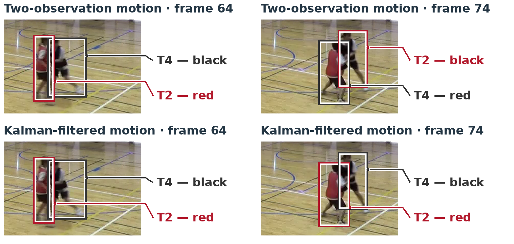
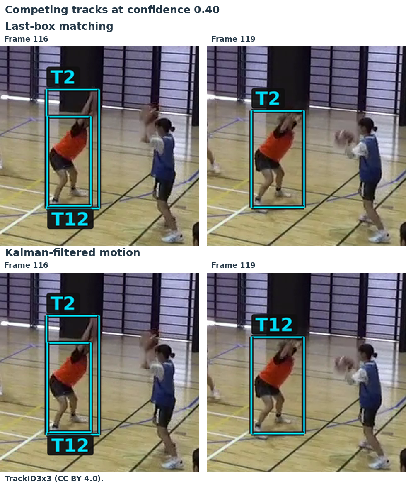
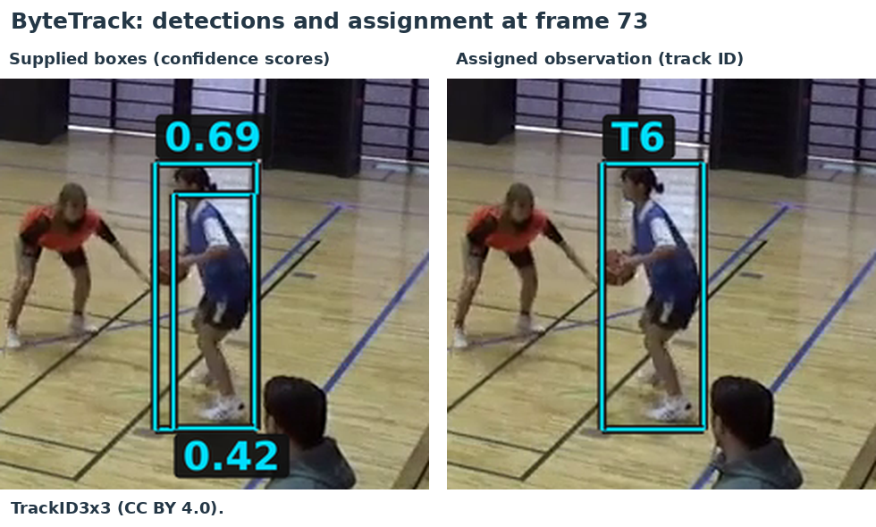
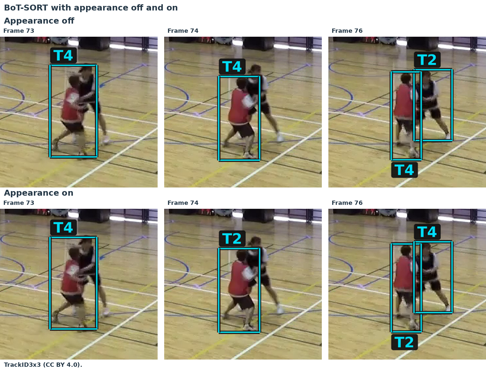
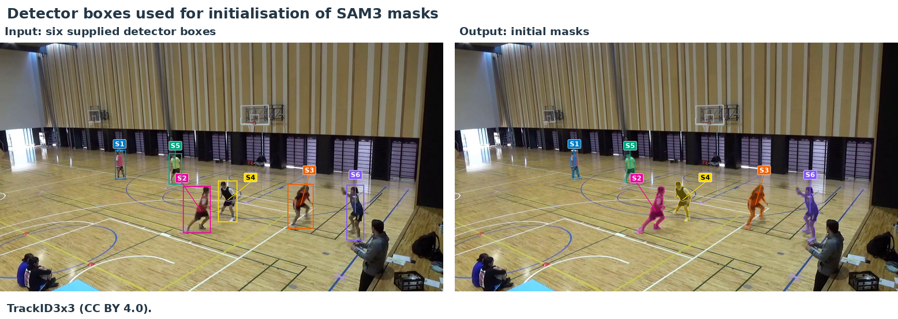
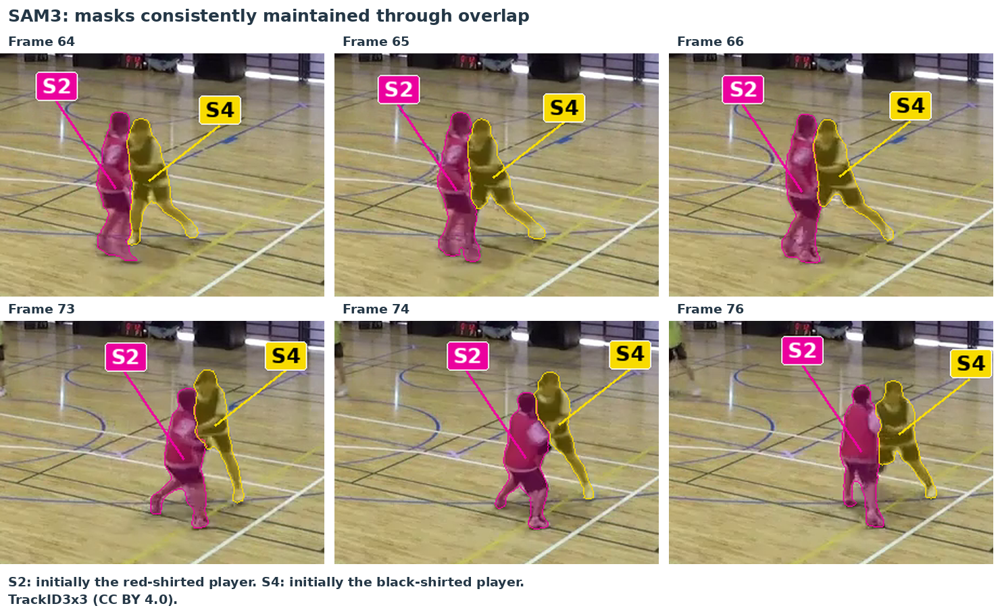

13 Filtering and practical trackers
We now return to improving the tracker, first by filtering the motion estimates and then by looking at how practical trackers use detection confidence, appearance and prompts.
13.1 Filtering the motion estimates
Our current motion predictor estimates velocity from the two most recent detections. Errors in their positions therefore also affect the velocity estimate, which we then use to predict the next position.
For a simple example, suppose an object moves horizontally by 4 pixels per frame. Its true centre positions in four consecutive frames are 20, 24, 28 and 32 pixels. Suppose the first two detections give the correct positions, but the third gives 40 instead of 28. Our estimated velocity is then
\[ v = 40 - 24 = 16\quad\text{pixels per frame}, \]
and the predicted position in the fourth frame is
\[ x_{\mathrm{predicted}} = 40 + 16 = 56\quad\text{pixels}. \]
The true position is 32 pixels. The error in the third detection affects both the position from which we predict and the velocity used in that prediction.
A filter, in the context of state estimation and tracking, combines a motion prediction with a new observation to update our estimate of the object’s state (true position and velocity).
In the present application, we predict the object’s position in the new frame based on earlier frames, and the centre of a detected bounding box in the new frame is treated as a new noisy measurement of the current position. We then aim to combine the predicted and detected positions to obtain a new position state estimate for the current frame.
As a simple example, for one position coordinate, we can combine the predicted and detected positions using a weighted average:
\[ x_{\mathrm{updated}} = (1-k)x_{\mathrm{predicted}} + kx_{\mathrm{detected}}, \qquad 0\leq k\leq 1. \]
Here \(k\) controls how much weight we give the new detection. A value close to 1 puts most of the weight on the detected position, while a value close to 0 puts most of the weight on the prediction. Equivalently,
\[ x_{\mathrm{updated}} = x_{\mathrm{predicted}} + k\bigl(x_{\mathrm{detected}}-x_{\mathrm{predicted}}\bigr). \]
Thus we see the idea is to form the update as a corrected prediction, based on the difference between the predicted and detected positions. The degree to which we weight the prediction or the new observation needs to be determined.
A Kalman filter uses estimates of uncertainty to determine these correction weights. A more uncertain observation receives less weight relative to the prediction; a more uncertain prediction receives less weight relative to the observation. The filter combines the motion model with an observation model describing errors in the detected positions. It updates the velocity estimate as well: an error in velocity produces a position error during prediction, so the position discrepancy also provides information about velocity. We will not describe Kalman filters in detail here, but they are used in the SORT tracking algorithm and are widely used in navigation and control systems more generally.
If we take this approach, our tracking loop now also carries filtered estimates of position and velocity for each track. Given a new frame, we first use the previous estimates to predict the object’s next box and perform the same IoU-based matching to detections as before, using the (uncorrected) prediction and new detection. Once the new prediction–detection pair has been established, we carry out the filter’s correction step for the position and velocity estimates, in preparation for predicting the next frame. In this example, we keep the width and height of the latest observed box for the estimated box.
In terms of recording the results, we still record the actual detection alongside the current estimated position and velocity. Saving these observations and state estimates at each frame lets us compare the detection history with the estimated trajectory for the same track. When an active track has no assigned detection, its detection history has a gap, while the motion model provides a predicted position for that frame.
13.2 Filtering the basketball tracks
We can now repeat the basketball example using Kalman-filtered motion in place of the two-observation motion predictor. We again track frames 50–100 at confidence cutoff 0.40, keeping the court filter, tracking IoU threshold of 0.30 and three-miss inactivation rule the same. The filter’s correction weights depend on assumptions about measurement noise and changes in motion. Here we use fixed, illustrative noise settings that have not been calibrated to this video.1
At frame 64, T2 labels the red player and T4 the black player. With the two-observation predictor, these labels have been exchanged by frame 71 and remain exchanged at frame 74, as shown below. With filtering, T2 still labels the red player and T4 the black player at frame 74. The boxes shown below are the detections assigned to each track.

At the original confidence cutoff of 0.50, last-box matching, the two-observation predictor and Kalman-filtered motion all show the earlier frame-74 identity error. At 0.40, last-box matching avoids this red/black exchange, but the black player’s ID has changed from T4 to T7. Filtering keeps both original IDs through this interaction, using the additional detections available at 0.40. These additional detections also include duplicate boxes, and all three methods still create temporary duplicate tracks.
13.2.1 Scores for frames 50–100
We can evaluate the filtered tracks over frames 50–100 using the same evaluation IoU threshold of 0.50 as before. At each confidence cutoff, all three methods record the same detections, so their detection precision and recall are unchanged. We evaluate the assigned detection boxes and track IDs, rather than the filtered position estimates.
| Confidence cutoff | Tracking method | Identity precision | Identity recall |
|---|---|---|---|
| 0.50 | Last-box | 0.852 | 0.827 |
| 0.50 | Two-observation motion | 0.852 | 0.827 |
| 0.50 | Kalman-filtered motion | 0.852 | 0.827 |
| 0.40 | Last-box | 0.914 | 0.908 |
| 0.40 | Two-observation motion | 0.862 | 0.856 |
| 0.40 | Kalman-filtered motion | 0.970 | 0.964 |
Blue rows add Kalman-filtered motion. Bold marks the best value in each score column.
At cutoff 0.50, filtering gives the same identity scores as the other two methods. At 0.40, it gives 295 accepted identity matches, compared with 278 for last-box matching and 262 for two-observation motion. This gives identity precision \(295/304\approx 0.970\) and identity recall \(295/306\approx 0.964\).
For this filtered run at 0.40, every accepted detection match also has the identity chosen by the sequence-wide pairing. Identity precision and recall therefore equal detection precision and recall. The scores remain below 1 because there are nine unmatched predicted boxes and eleven missed annotation boxes.
We can also add the filtered runs to the IDF1, MOTA and HOTA comparison. These scores again use the actual assigned detections from fresh frames 50–100 runs, not filtered position estimates. IDF1 and MOTA use evaluation IoU 0.50; HOTA is averaged over the 19 thresholds from 0.05 to 0.95.
| Confidence cutoff | Tracking method | IDF1 | MOTA | HOTA | ID switches |
|---|---|---|---|---|---|
| 0.50 | Last-box | 0.8391 | 0.9118 | 0.6758 | 4 |
| 0.50 | Two-observation motion | 0.8391 | 0.9150 | 0.6793 | 3 |
| 0.50 | Kalman-filtered motion | 0.8391 | 0.9150 | 0.6793 | 3 |
| 0.40 | Last-box | 0.9115 | 0.9314 | 0.7153 | 1 |
| 0.40 | Two-observation motion | 0.8590 | 0.9248 | 0.6703 | 3 |
| 0.40 | Kalman-filtered motion | 0.9672 | 0.9346 | 0.7375 | 0 |
Bold again marks the best values within each confidence group, including ties. The ID switches are counted by the same CLEAR evaluation used in MOTA.
At confidence cutoff 0.40, filtering gives the highest of these scores in this window, while two-observation motion scores below last-box.
13.2.2 Restarting over the full clip
The scores above describe runs that begin at frame 50 and end at frame 100. We now compare last-box matching and filtered motion over the full clip, frames 1–142, using confidence cutoff 0.40. Both trackers start afresh at frame 1, so their track IDs differ from those in the earlier example. In this run, T2 labels the orange-shirted player. At frame 116, a duplicate detection creates a second track, T12, for the same player.

At frame 119, last-box matching keeps T2, while filtered motion assigns the detection to T12. The T2 reference box has IoU 0.776 with the detection under last-box matching, and 0.743 when predicted from the filtered state. The competing T12 reference has IoU 0.749 in both runs. All these overlaps are above the acceptance cutoff of 0.30, but the one-to-one assignment selects a different track in each case.
With the settings used here, adding Kalman filtering gives a local improvement in the assigned track IDs but no clear overall advantage over last-box matching across this short clip. Missing detections and competing tracks created by duplicate boxes still cause problems.
A clearer benefit can arise for an object moving a substantial distance between frames at roughly constant speed and direction, with noisy position measurements. The motion model predicts beyond the last observed box, while the filter combines observations over time to reduce the effect of individual detection errors on the position and velocity estimates.
Source images: TrackID3x3, CC BY 4.0.
13.3 Practical trackers and appearance information
We have used three ways to form the reference box for matching a track to a new detection:
| Reference | How we form it |
|---|---|
| Last observed box | Use the box from the most recent detection assigned to the track. |
| Two-observation motion | Estimate velocity from the two most recent observations and predict the next box. |
| Kalman-filtered motion | Predict from position and velocity estimates that combine earlier predictions and observations. |
A complete tracker combines its motion model and matching method with rules for starting, confirming and ending tracks. The following methods illustrate different combinations of these ideas:
| Method | Main ideas |
|---|---|
| SORT | Kalman box prediction, IoU association and track management. |
| Deep SORT | Kalman motion prediction and learned appearance information for association. |
| ByteTrack | Kalman motion prediction; match high-confidence detections first, then use lower-confidence detections to update remaining active tracks. |
| BoT-SORT | ByteTrack-style association with a revised box-motion model, camera-motion compensation and optional appearance matching. |
Our small filter-based tracker shares its basic structure with SORT, although SORT also models box size and has different track-confirmation and expiry rules. We can now consider two further sources of information used by these methods: detection confidence and appearance.
13.3.1 Using confidence differently for updates and new tracks
In our simple loop, an unmatched detection that passes the confidence cutoff starts a new track. ByteTrack separates the evidence needed to update a track from that needed to start one. It first matches high-confidence detections to existing tracks. It then tries lower-confidence detections against the remaining unmatched active tracks. These lower-confidence boxes can update those tracks, but cannot start new ones.
In our frames 50–100 test, the high threshold is 0.50 and the second stage uses scores between 0.10 and 0.50. It supplies six additional player observations compared with the same ByteTrack given only high-confidence inputs, including observations of the red and black players at frame 65. The benefit of this second stage is fewer gaps in the assigned detections.
At frame 73, the box with confidence about 0.69 updates T6. The overlapping box with confidence about 0.42 is unused: T6 has already been matched, and this lower-confidence box cannot start a new track. It therefore avoids the extra record created by our simple tracker at cutoff 0.40.

Allowing weak observations can also affect later associations. In our full-clip test with high threshold 0.40, enabling the lower-confidence updates recovered additional observations but also produced more ID changes and duplicates than withholding those boxes.
13.3.2 Using the image inside the box
The image inside each box provides another source of information about which player it belongs to. A network trained for person re-identification (ReID) maps a cropped person image to a vector of features, or an appearance embedding. Its training encourages different images of the same person to have similar vectors. The tracker can compare a new crop with earlier crops assigned to a track, alongside its comparison of box positions.
We tested BoT-SORT with its appearance component switched off and on, keeping the other settings and supplied detections the same. Both runs cover frames 50–100 with high threshold 0.50. Camera-motion compensation is switched off for our fixed-camera video, and the appearance network is pretrained rather than trained on this basketball sequence.
At frame 71, both runs label the red player T2 and the black player T4. Both assign T4 to the red player at frame 73. With appearance enabled, the red player regains T2 at frame 74 and the black player regains T4 at frame 76. Without appearance, the red player remains T4 and the black player T2 through the rest of the run. The figure shows the assigned detection boxes.

Appearance can also favour a duplicate detection. In a run starting at frame 1 with the same high threshold of 0.50, the appearance-enabled tracker selects a lower-confidence duplicate at frame 27 because its crop is slightly more similar to the track’s stored appearance. The other, higher-confidence box then starts an additional track. Both crops depict the same player: appearance similarity alone does not select the better-localised box or prevent a duplicate record. The way the tracker combines appearance, confidence and track-management rules therefore still matters.
Source images: TrackID3x3, CC BY 4.0.
13.4 Modern directions: promptable video segmentation
In Image analysis tasks, we introduced instance segmentation, which identifies the pixels belonging to each separate object. This gives us a pixel mask for each player. We can also follow these masks through a video, keeping a consistent ID for each player.
Models such as SAM 3 support this kind of tracking. We can select an object using a box prompt: a rectangle indicating which object we want the model to segment and follow.
Here we use the six YOLO11n detections from frame 50 as initial box prompts. These are the same boxes retained by our confidence threshold of 0.50 and court filter. We give the selected objects IDs S1–S6, and SAM 3 predicts a mask for each one.

After frame 50, we supply only the subsequent video frames, with no further YOLO detections or corrective prompts. SAM 3 uses each new image together with stored visual information from earlier frames to predict the six masks. In this example, it maintains the six identities through frame 100. The frames below show S2 and S4 remaining with the red- and black-shirted players as they overlap.

SAM 3 tracking the six players, shown in slow motion.
This is online tracking: each step uses the current image and information from earlier frames. However, real-time tracking also requires processing to keep up with the video. In the experiment we ran SAM3 processed the frames more slowly than they would arrive from a live camera so could not be used for real-time tracking.
Video and images: TrackID3x3, CC BY 4.0.
Per image coordinate, we use a measurement-error standard deviation of 4 pixels and an acceleration-noise standard deviation of 1 pixel/frame². A new track starts with zero estimated velocity, position standard deviation 4 pixels and velocity standard deviation 10 pixels/frame.↩︎